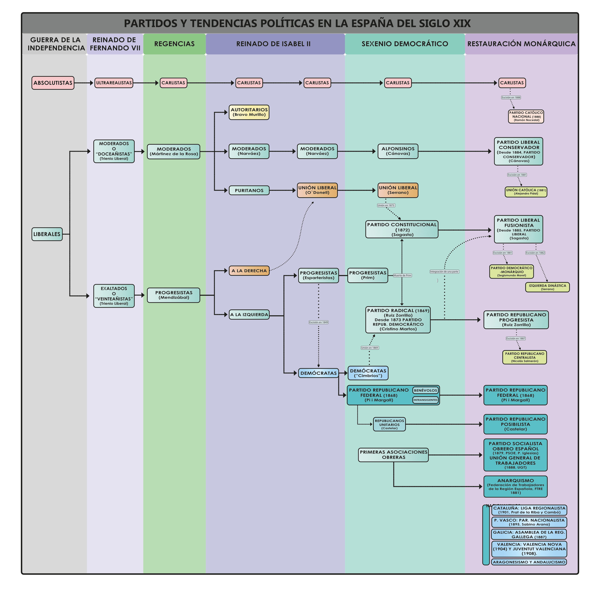

Comparador Constitucional
Analiza y compara frente a frente los textos fundamentales de la España Contemporánea (1812 - 1978).
Partidos y Tendencias Políticas
Evolución de las facciones durante el Siglo XIX y comparador detallado de ideologías durante el Reinado de Isabel II.
Comparador de Partidos (Reinado de Isabel II)
Genealogía y Evolución Política (S. XIX)
Asegúrate de que la imagen partidos-politicos-siglo-xix.png esté en la misma carpeta que este archivo para visualizarla correctamente. Utiliza el ratón o desliza el dedo para moverte por el esquema si haces zoom.

Pronunciamientos Militares
Listado íntegro de alzamientos desde la muerte de Fernando VII hasta 1874.
| Año | Pronunciamiento de... | Rango Militar | Ideología | Resultado Final |
|---|
Elecciones y Leyes Electorales
Evolución del derecho a voto y resultados del turno dinástico.
Leyes Electorales y Censo (1834 - 1866)
| Ley / Normativa | Presidentes | Fecha | Electores |
|---|
Elecciones y Turno de Partidos (Alfonso XIII: 1903 - 1923)
| Fecha Elección | Vencedor | Distribución de Escaños (Aprox.) | Presidentes Derivados |
|---|
Evolución de los Gobiernos
Análisis de la inestabilidad política y el recambio de gabinetes ministeriales.
Presidentes de Isabel II (1843 - 1868)
| Año | Moderados | Progresistas | Unión Liberal |
|---|
Cronología de Gobiernos (1833 - 1874)
Modo Repaso
Autoevalúate. Lee el evento histórico y toca la tarjeta para descubrir en qué año y época sucedió.
Cargando evento...
Vocabulario Histórico
Glosario de términos de Historia de España, ordenado alfabéticamente.